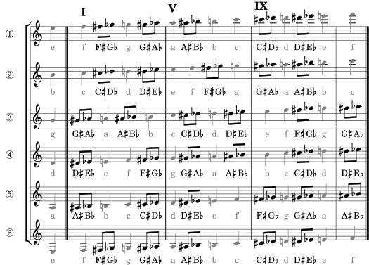
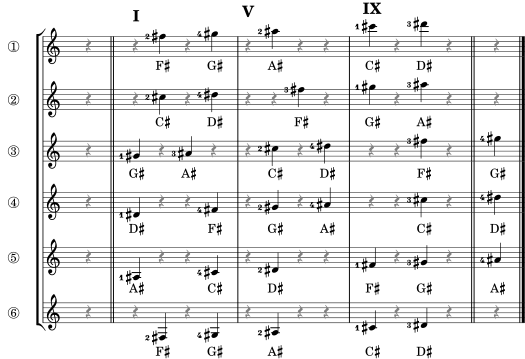
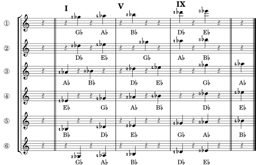
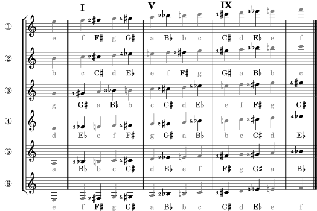
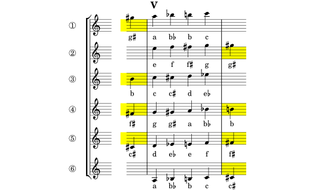
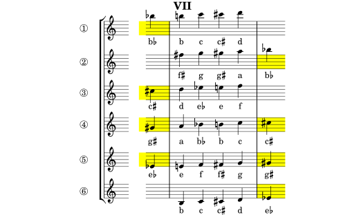

The DFE introduced “musical fretboard diagrams” as a way to learn the fretboard without looking at a fretboard, but instead by looking at notes on music arranged spatially like a fretboard. There were six staves, like the six strings, and bar lines to define positions along the neck, with four beats between bars showing which finger to use. Within a position, it was easy to see how to play a particular note on the fretboard (string and fret) from seeing its position in the diagram (staff and beat). It was purely a matter of visual recognition that transferred directly to sight reading those notes in real music.
Here's an example. The double bar on the left represents the nut and the notes to its left are the open strings accessible in first position. The double bar on the right marks the twefth fret. The other bar lines define the first, fifth and ninth positions, which together cover all the notes on the neck.

Those “rests” in the diatonic diagram corresponded to the sharps and flats (the black keys) that you could skip over when learning just the natural notes (the white keys). But now they are the center of attention, and they add an interesting wrinkle in your sight reading.
For diatonic melodies, sight reading in the key of C is nearly automatic: you recognize a note visually and remember where it's fingered within the fretboard diagram for that position. There are no rules to evaluate or transformations to do; you just see it and immediately know where to play it by memory. There's no second guessing.
But imagine, what would happen if the note you're looking at is not the note that you actually play? If it were on the next fret instead, or even farther away on the next string? Or the opposite; what if two different notes on the staff were in the exact same place on the fretboard? And what if you had to figure out all these choices in real time in order to play the right note without missing a beat?
Welcome to the world of chromatic music and its accidental complexities. It takes some quick thinking to sight read, but the richness of the music makes it well worthwhile.
If you've read the DFE section on “The Diatonic Triads” and and especially the section “Diatonic in Any Key” you realize that sharps and flats are also expected when playing diatonic melodies in other keys; but that they can be factored out by the key signature, so that diatonic melodies don't show sharps or flats next to any of their notes on the staff. The DFE was in the key of C, so there weren't even any sharps or flats in the key signature. You never had to use a black key.
Chromatic melodies, on the other hand, do have occasional sharps or flats (or natural signs) whenever they deviate from the simple diatonic scale implied by the key signature. And those deviations stay on the same notes of a song even when the song is transposed to any other key (with its new key signature). Each such deviation is called an “accidental” and typically appears as the combination of an ordinary note with a preceding sharp or flat sign.
There are two important ways that accidentals complicate your sight reading.
The first is that not all accidentals are marked in the music. By convention, an accidental on a particular note is understood to apply for the rest of the measure, or until it is undone by a subsequent accidental on the same note in the same measure. This makes the printed music more compact and less cluttered, but it makes sight reading harder. Some notes that look natural may actually by under the influence of a previous accidental in that measure.
For example, here's the famous tweedle-tweedle motif from Beethoven's Für Elise. It has six D's, the first five of which are sharped and the last is natural, but only three of the sharps are marked.
When you're sight reading music with accidentals, you have to apply the rules in real time and be alert for the measure bars to know where the rules end. In this case, sharp ② applies to the remaining D's in that measure, and sharp ③ is marked because sharp ② lost its effect at the bar line. If this had been in 3/4 time instead of 3/8, sharp ③ would have been unmarked because sharp ② would still be in effect. Regardless, the natural sign on the last D remains necessary since it's in the same measure.
The second way that accidentals complicate sight reading, especially on the guitar, is that some places on the fretboard correspond to two visually distinct notes on the staff, and you need to learn to recognize both of them.
For example, every octave has five non-diatonic notes (the black keys) and each can be regarded equally as either the sharp of its immediate lower neighbor or the flat of its upper neighbor. So those five notes have ten names (and appearances), as shown on the staff below. These accidentals are quite common. Each beamed pair of eighth notes here represents the same black key:
It gets worse. You will find cases where sharps and flats are applied even when there is no black key in between, i.e. to the notes E-F and B-C, as shown below. Flatting the white key F leads to E, another white key. Similarly, sharping an E leads to F. Below, each beamed pair of eighth notes represents the same white key:
And worse. There are rare situations (even in this book) where you will encounter a “double sharp” or “double flat” like below. In theory these accidentals could be applied to any note, but in practice (due to the circle of fifths) you'll mainly see just these two cases (again, each beamed pair is the same note):
All these rules are a challenge to follow in real time while sightreading chromatic music and trying not to hit a bad note. But some of this can be learned in advance, just like you learned the natural notes.
Computer science and guitar sightreading both involve trade-offs depending upon the power of your central processing unit (brain): can you add more memory to just know the answer, or is your processing power fast enough to go through all the rules and figure out the answer in real time?
For example, when naming the notes on the staff, you could process the rule “Every-Good-Boy-Does-Fine” in real time to figure out that a note on the top line is an F, or you could remember that answer just by looking at it. One rule can help you figure out all five line names from one memory, but having five individual memories of the line names is much faster.
Before you had read the DFE book, you might have tried using the “E-A-D-G-B-E” rule and counting frets to figure out how to play middle C in seventh position, but then you built memories based on seventh position and where its 17 natural notes are fingered to make sightreading easier. It's much more to remember, but much faster to play.
The trade-offs are more interesting for reading accidentals in chromatic music. Rule 1 (for implicitly extending an accidental through the rest of the measure) would seem to require real-time processing (or at least good short-term memory of all the accidentals so far in a measure).
And all the equivalences in Rule 2a (between sharping the lower neighbor or flatting the upper) mean that the CFE has lots more notes to remember visually than the DFE. Instead of just 7 white notes per octave, you add 5 more black notes, each of which has two appeareances, so now there are 7 + 2*5 = 17 notes to recognize per octave. Sure, remembering all of them individually would make sightreading faster, but is that too much for you to remember?
Instead of building your own chromatic memory, you may be tempted simply to rely on your diatonic memory of the natural notes, understanding that this will add even more real-time rules to find the nearby sharped or flatted notes.
Some guitar sightreaders will tell you they read all accidentals as modifiers of the bare note to which they are attached. For example, when they encounter a C♯ (e.g., the one on the second space from the top of the staff) they will remember the fingering for C in that position and then go up one fret to sharpen it. Likewise for a D♭, they go to the D and then lower it one fret to get to the same place. That works fine for this case in first position:
But look at what happens to those same notes in seventh position where the C and D are on different strings; flatting D leads to a different place than sharping C and if you're reading a C♯ you have to remember in real time that it's also on the other string where you'd expect a D♭:
That's okay (it's not a wrong note) but you may miss an opportunity for a more convenient fingering, like when choosing how to play the B in the middle of position V. You can go high on a low string or low on a higher string.
The other problem with just using your diatonic memory and adjusting for sharps or flats is what happens when you try to flat an open string in first position, like B♭ or E♭. You can't finger it below the nut so you're forced to jump to a lower string instead; a bit of error correction that adds a little more processing time. Eventually you learn, but that's back to using chromatic memories instead of real-time adjustments on diatonic memories.
Here are a couple of little tunes that may help you decide between relying on your old diatonic memories (with real-time adjustments) or learning some new chromatic memories.
Pick up your guitar and play the music below, assuming you remember from the DFE how to play these notes when they don't have sharps or flats. Start in first position and then repeat in ninth position (remember first finger E on the third string to find ninth position). This music is simply the five black keys played first as sharps and then as flats. It should sound like an easy stroll up and down the pentatonic scale. And notice that the first note actually is within ninth position even though natural middle C is not.
Now for an amusing challenge. The music below uses the exact same notes you just played above, but it mixes them up to illustrate some accidental complexities and to hide the identity of the tune. It's an abnormally difficult sight read, but if you can get through it correctly you'll recognize a familiar English children's song and nursery rhyme. Give it a try (but don't forget rule 1 on the third note).
What makes this example so difficult is that it uses both sharps and flats to represent what are actually the same repeated pitches, so they appear to move up and down on the staff when their pitches aren't changing (e.g. the first three notes). And pitches that really are different (like the two A's in the third measure) appear at the same height within the staff. That's intentional obfuscation; real music tries hard to show pitches more graphically and honestly.
The next few sections present some diagrams that can help you build your chromatic memory of the fretboard up to the thirteenth fret (needed for ninth position). You might want to try the above workout again once you've built up some chromatic memories.
This diagram has everything in one place: sharps, flats and natural notes. Like in the rules section, beamed eighth notes show the dual identities of the chromatic notes.
This all-in-one diagram is probably best used as a single-page reference or cheat sheet. See below for a better way to learn your sharps and flats.
In real music you're not going to see the dual versions of a chromatic note (sharp and flat) together. Instead, there will be individual sharps or flats that you'll need to remember how to play. And when you're trying to remember a given sharp, having all those flats in the same diagram is just irrelevant clutter. And vice-versa for learning the flats.
This section has one diagram for learning sharps and a separate one for learning flats. These have minimal clutter; even the natural notes are surpressed. And there are even fewer notes here to remember (5 per octave) than on the diatonic diagram you already learned (7 per octave). This allows you to focus (literally) on just where the sharps are located on the fretboard, so you can concentrate on building a visual memory of (1) how a note appears on the staff and linking that to (2) where you finger it on the fretboard.
These are the diagrams you should use to build your fast chromatic memory.
Start by gazing at a particular note, like the D♯ on the second line of the staff. Visualize (from looking at this diagram) where it's located on your fretboard (in your mind's eye; don't actually look at your guitar). Notice that there are only three places on the neck where you can play this note. You might also think about these places in relation to the diatonic D natural that you already know how to play.
Now do the same thing to learn the flats. You might even reflect on the fact that you see an E♭ everywhere you previously saw a D♯. Both notes (and their memories) lead to the same places. That's how you'll think about them when you play them in real music.
To simplify matters in the rest of this book, especially regarding the circle of fifths, it helps to put aside the dual nature of every chromatic note, and just use the most familiar note names: three sharps (F♯, C♯ and G♯) and two flats (B♭ and E♭).
This covers the most common chromatic note names and also allows inclusion of the diatonic notes in the diagram without too much clutter. You won't see D♯ any more, but you'll know it's the same as E♭.
This next diagram might appeal to the mathematically inclined, or to those who still insist on using only their diatonic memory.
It's the full chromatic diagram where all that beamed-eighth-note clutter and its dual note names have been replaced by a single “sharp/flat” symbol. It is placed so that the sharp part falls right on the space or line of the lower note being sharped, while the flat part is higher to align with the line or space of the higher note being flatted.
For example, focus on what should be the C♯ or D♭ on string ② and notice how the sharp part would align with a C♯ while the flat part would align with a D♭. In all cases, the sharp name comes from the note on the left and the flat name comes from the note on the right.
This diagram won't help you build a visual memory keyed by how a chromatic note appears on the staff (you won't ever see this sharp/flat symbol in real music), but it might be a useful summary to prompt your reflection on whatever algorithm you've chosen to use in playing chromatic notes. Look at a symbol and think of what it represents and where you'd play it.
Regardless of whether you're relying on your diatonic memories of the fretboard to play chromatic music, it still comes down to learning enough notes to play a complete scale in a particuar position. Only now we're talking about the chromatic scale with a lot more notes than the diatonic scale (12 per octave rather than just 7). And reaching all those notes is harder than in the DFE. Hard enough to declare “yellow zones” where the hazards warrant special attention.
Do you have enough diatonic memory from the DFE to remember the most peculiar thing about position V? That it has no middle-of-the-staff B? Unlike first or seventh positions, where all the natural notes in those positions are within the four comfortable finger slots, in fifth position you have to stretch outside to reach a B, either above or below.
The DFE introduced this pecuiarity of position V as an “extension note” using the following diagram of fifth position. If you start at the bottom and follow the alphabet up, as though you were playing a minor diatonic scale from low A to high C, you'll see there's no middle-line B without extending your reach.
Now in the CFE, to play a complete chromatic scale over the same range, you'll need even more extension notes, highlighted in yellow below. Now there are four extension notes, and the same four are repeated on both the high side and the low side of the position:
If you're playing in this position and come upon one of these four notes, then you not only have to do a stretch, but you also have to make a quick decision whether to stretch low or stretch high. And for chromatic notes, that's in addition to realizing that the same note can appear either as a sharp or a flat. That's a lot of real-time processing to do while sightreading, so the yellow zones flag some special hazards to your sightreading.
It gets worse. Every position has its own yellow zones. They will contain different notes, but they're always in the same pattern: four above and four below. That's because the intervals between neighboring strings stay the same as you go up the neck. As you know from tuning one string against its neighbor, you have to go up 5 frets to reach the same pitch. But you only have four finger slots to cover a position, so that's one short. Except between strings ② and ③ due to their closer tuning (only 4 frets apart).
A good example is our beloved seventh position where the complete diatonic scale can be played within the four finger slots of that position. But not the chromatic scale. To do that, you again need extension notes in the same yellow zones as every other position:
Technically even first position has such zones but they're irrelevant because you get the open strings for free; the nut acts like a fifth finger when you consider your reach. And you can't play lower than the nut, so the zones would only be on the high side anyway. Let's face it; first position isn't representative of the other positions, which is another good reason to begin with learning both seventh and first positions at the same time.